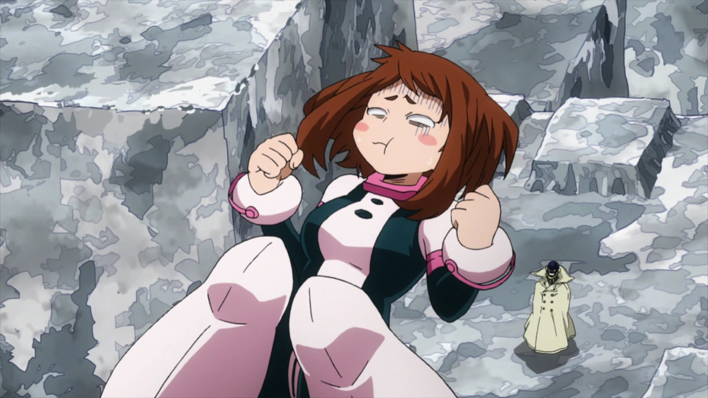

Zero Gravity
Five fingertips, and the world lets go. She touches things and they forget which way is down — debris, enemies, herself — and then she decides when gravity gets to remember. The nausea is the only honest part.

Zero Gravity
Field notes. Subject: Ochaco Uraraka, who fights like gravity is a suggestion she politely declined. Three truths govern her. First: the touch is the law. All five fingertips on a thing, and it becomes weightless — it stays that way until she touches her own fingertips together and lets the world remember. Second: the weight has limits. About three tons, past which her stomach files a formal complaint — overuse turns her own body against her. Third: the fall is the weapon. She doesn't hit people; she rearranges the sky above them and lets physics do the arguing.
Feature map
Level-by-level features
Zero Gravity
Action · 1 CE · Touch a creature or object (Medium or smaller) with all five fingertips · It becomes weightless until you release it. You can affect up to PB + 2 targets at once.
Five fingers, and down stops applying. A weightless creature cannot move under its own power — it drifts — unless it pushes off a surface or another creature, moving in a straight line. It has disadvantage on attack rolls and Strength checks (no leverage), and it takes no falling damage. She touches the world the way you'd touch a soap bubble: carefully, and on purpose.
Release
No action · Touch your fingertips together · End Zero Gravity on everything you are affecting.
The other half of the technique, and the more dangerous one. Gravity comes back all at once, with interest. She decides exactly when — which is why the debris is always exactly above the person she doesn't like.
Lighten Self
Bonus action · 1 CE · Make yourself weightless (counts toward your target limit).
Herself, too. She goes light and the world tilts — suddenly up is a matter of opinion and every surface is a launchpad. Her stomach objects. She has learned to object back.
Gunhead Martial Arts
Passive · Your unarmed strikes deal +1d4 bludgeoning. You have advantage on Athletics checks to grapple or shove weightless creatures; when you shove a weightless creature, double the distance.
She asked a pro hero to teach her how to fight up close, and he taught her how weight works when it doesn't. A weightless opponent is a balloon with opinions — she pops their stance, redirects their drift, and puts them exactly where the sky is about to fall.
Debris Lift
Bonus action · 1 CE · Lift up to PB loose objects (Medium or smaller) within 30 ft · They float around you, following your movement (each counts toward your target limit).
The battlefield becomes her armory. Rubble, furniture, loose masonry — everything not nailed down rises and orbits her like a slow, patient solar system. Nobody notices the ceiling getting heavier until it's already too late.
Meteor Shower
Action · 3 CE · Release lifted objects above a point within 60 ft · 20-ft radius · 1d6 bludgeoning per object released (max 10d6), Dexterity save for half.
The sky falls on schedule. She lets go all at once, and everything she borrowed comes down in a single crushing answer. It was never about lifting things up. It was always about choosing where they land.
Weightless World
Passive · The five-finger requirement is gone — any touch applies Zero Gravity. Size limit becomes Huge; target limit becomes 2 × (PB + 2). Action · 3 CE · Everything within 15 ft becomes weightless (unwilling creatures: Constitution save negates).
Mastery looks like carelessness. She brushes a shoulder, taps a wall, and the world quietly lets go around her. At the center of it she stands perfectly still — the one thing in the room that gravity still applies to, because she says so.
Four feats, all weightless.
Zero Gravity teaches four feats. Each is optional, and you must meet its listed prerequisite before taking it.
Iron Stomach
You have advantage on saving throws against nausea and strain from your technique, and your target limit increases by 2. Her stomach still complains. She has simply stopped listening.
Precision Drop
When you use Meteor Shower, choose any number of creatures in the radius to spare — the debris threads around them like it was aimed by hand. Because it was.
Tether Pull
Bonus action · 1 CE · Drag one weightless creature within 30 ft up to 15 ft toward you (unwilling: Strength save negates). Weightless things go where they're pulled. She pulls.
Combat Float
While you are weightless, you gain a fly speed of 30 ft — you swim through the air by force of will and well-timed pushes. The nausea never quite leaves. The sky was worth it.
Edge cases and shared systems.
Campaign canon notes